If you don't want to print now,
Information from the variation in data
Variation in data is not simply an annoyance — the variation itself can hold important information.
Simply sorting a data set into order can highlight features that are not obvious in the raw data, such as the lack of values between 3.4 and 4.9 in the data below.
| 6.1 | 5.2 | 7.9 | 2.3 | 3.4 |
| 1.4 | 5.3 | 7.1 | 3.2 | 2.8 |
| 5.1 | 6.9 | 6.1 | 3.4 | 5.2 |
| 5.5 | 2.0 | 1.3 | 4.9 | 6.4 |
|
Dot plots Some ranges of values are more common than others — they have higher density. The simplest graphical display of data that shows where there is high and low density is a dot plot. This shows each value as a cross (or dot) against a numerical axis. The gap between 3.4 and 4.9 is more obvious on the right than in a textual list of values, whether ordered or not. |
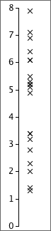 |
Jittering the crosses
In all but the smallest data sets, the crosses on a basic dot plot overlap, making it difficult to identify regions of high density.
Randomly moving crosses away from the axis reduces this problem by separating the crosses:
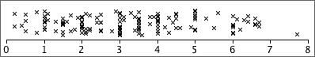
Note that the vertical jittering is random and therefore tells you nothing about the data.
Stacked dot plots
Stacking the crosses into columns is usually better than jittering them.
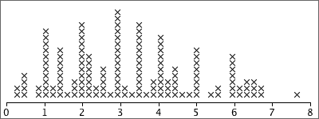
Stacking highlights regions of high density well (tall stacks).
Digits instead of crosses
Stem and leaf plots are closely related to stacked dot plots. The crosses are replaced by digits that provide a little more detail about the values that they represent.
Stems and leaves
In a stem and leaf plot, the axis is replaced by a column of 'stems' — the most significant digits of the values in the data. The digits that replace the crosses are called 'leaves' and give a further significant digit of each value on a stem.
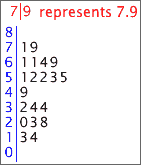
A final refinement is to sort the leaves into increasing order on each stem.
Need for more flexibility
Sometimes basic stem and leaf plots are not flexible enough — there would be either too many or too few rows of leaves to show the varying density well.
Repeating each stem 2 times (with leaves 0-4 on the lower copy and leaves 5-9 on the upper one) or 5 times (with leaves 0-1, 2-3, 4-5, 6-7 and 8-9 on the different copies) gives intermediate numbers of stems.
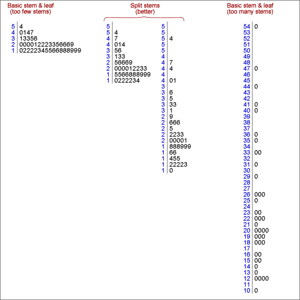
Smoothness
When drawing a stem and leaf plot, the aim is for a smooth shape to the stem and leaf plot, and this is usually achieved by between 10 and 20 rows of leaves.
Drawing by hand
When data are analysed on a computer, a stacked dot plot usually describes a distribution of values more clearly than a stem and leaf plot.
However stem and leaf plots are easy to draw by hand:
To simplify drawing, values are truncated to give their stems and leaf digits, not rounded. For example, 7.98 and 7.90 would both be displayed as leaf '9' on the stem '7'.
Outliers
Values that are considerably larger or smaller than the bulk of the data are called outliers.
An outlier may have been incorrectly recorded, or there may have been other anomalous circumstances associated with it. Outliers must be carefully checked if possible. If anything atypical can be found, outliers should be deleted from the data set and their deletion noted in any reports about the data.
Outliers and skew distributions
Deciding whether a value is an outlier or not is affected by the shape of the distribution of values for the rest of the data.
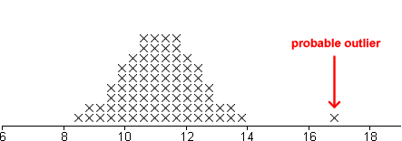
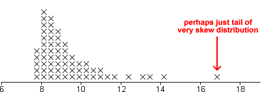
Clusters
If a dot plot, stem and leaf plot or histogram separates into two or more groups of values (clusters), this suggests that there may be more fundamental differences between the 'individuals' in the groups.
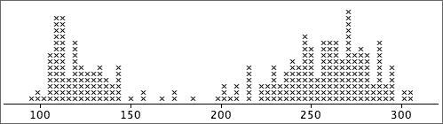
Further investigation should be made of the individuals in the clusters to find whether they also differ in other ways.
If the clusters were less distinct, especially in small data sets, you would need external supporting evidence before concluding that the individuals separated into meaningful groups.
Distribution of values
Even when a data set has no outliers or clusters, the distribution of values also contains useful information. Important features are:
The concepts of centre and spread are particularly important.
Extra information
When only a single value is known from each individual (or plant, item, etc), all that can be discovered is the shape of the distribution of these values.
Additional information about each individuals may give insight into why some values are bigger or smaller than others. Different types of information may be available. The simplest is a unique name for the individuals — a textual label. These names may help us to understand why values are outliers or group into clusters in a dot plot or stem and leaf plot.
Multiple groups of individuals
Sometimes we know that the individuals belong to two or more groups before the data are collected or, equivalently, that they have different values of an extra categorical variable.
Information about groups is best displayed by plotting the separate groups against a common axis.
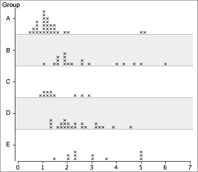
Back-to-back stem and leaf plots
Stem and leaf plots can be used to compare two groups of individuals, if drawn on different sides of a common column of stems. (They are less useful if there are three or more groups.)
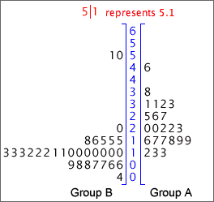
Dangers of overinterpretation
Features in the distribution of a small data set may not be meaningful.
Be careful not to overinterpret patterns in small data sets. Clusters, outliers or skewness may appear by chance even if there is no meaningful basis to these features.
Pronounced outliers or clusters may be taken as indicative of something meaningful in the underlying process. However less pronounced outliers or clusters must be supported by outside evidence before these features can be interpreted as meaningful.
Density
In a stacked dot plot (or stem and leaf plot), the highest stacks contain the most values. These stacks have the highest density of values.
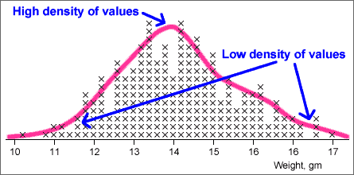
Histograms more directly show how density varies along the axis.
Histograms
In a simple histogram, the axis is split into sub-intervals of equal width called classes. A rectangle is drawn above each class with height equal to the number of values in the class — the frequency of the class.
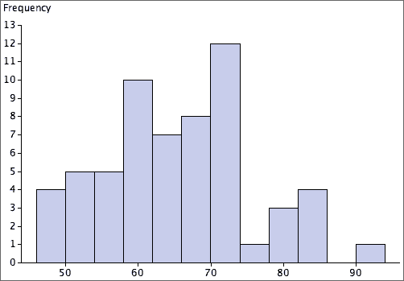
Aim of a 'smooth' histogram
There is considerable freedom in the choice of histogram classes. The exact shape depends on:
We usually choose classes with the aim of smoothness in the outline of the histogram rectangles.
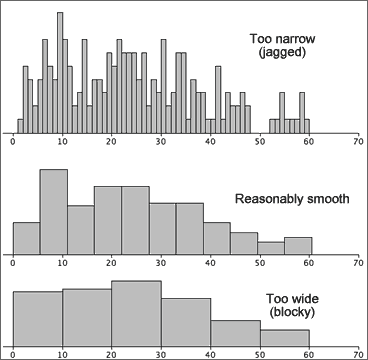
The choice of 'best' classes is subjective, but...
If your conclusions about what a histogram tells you about the data depend on the choice of histogram classes, you are over-interpreting its shape.
Warning for small data sets
For small data sets, changing the class width and the starting position for the first class can give a surprising amount of variability in histogram shape, so be extremely wary of over-interpreting features such as clusters or skewness.
Indeed, it is probably better to avoid using histograms unless there is a reasonable number of values — stacked dot plots are far less likely to mislead you over minor features.
Relative frequency
When all histogram classes are of equal width, histograms are often drawn with a vertical axis giving the frequencies (counts) for each class. The vertical axis can alternatively be labelled with the relative frequencies (proportions) for the classes.
(There is no harm in including both axes.)
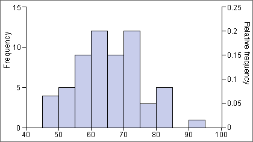
Area equals relative frequency
An important property of histograms is that the proportion of values in one or more classes equals the proportion of the histogram area above these classes.
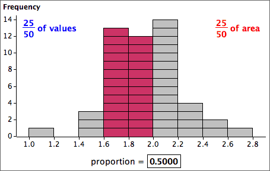
Therefore,
Relative frequency = proportion of the total area
Relative frequencies to compare two groups
Histograms may be superimposed to compare two groups. However if the groups differ in size, it is usually more meaningful to compare relative frequencies (proportions) than the counts in the classes.
Use relative frequency histograms to compare groups.
For example,
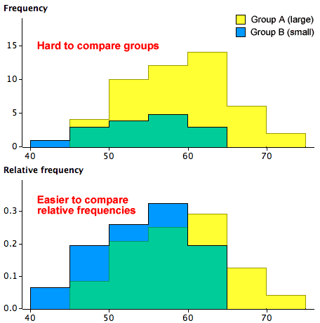
Mixed class widths
For some data sets, wider classes give a smoother histogram in some ranges of values (e.g. in the tail of a distribution) and narrower classes are better in other parts of the distribution (usually where there is greater density of values).
In a correctly drawn histogram, each value contributes the same area.
Histograms can be drawn with mixed class widths, but it would be badly misleading to make the rectangle heights equal to either the class frequency or relative frequency.
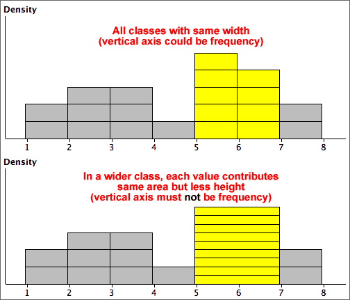
Area and proportion of values
The details of drawing histograms by hand with varying class widths are unimportant — a computer should be used. To interpret their shape remember that
The proportion of the total area above any classes equals the proportion of values in them.
For example,
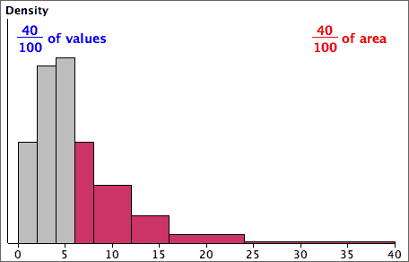
Frequency polygons
A frequency polygon is closely related to a histogram with equal class widths. It joins the midpoints of the tops of the class rectangles and tends to give a smoother outline than the corresponding histogram.
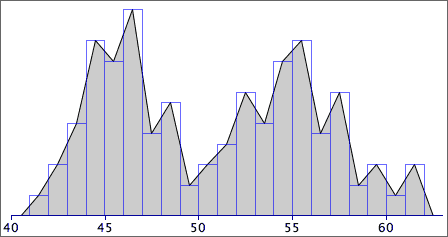
It is easier to distinguish and compare superimposed frequency polygons for two groups than the corresponding histograms.
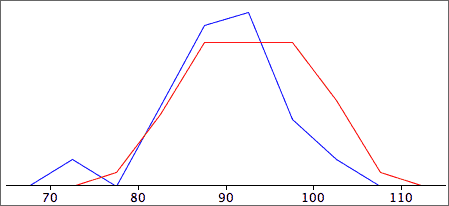
Kernel density estimates
A kernel density estimate is an alternative to a histogram that often results in a smoother display of the density of values. Each data value on the axis is replaced by a 'blob' of ink (kernel) and these kernels are stacked.
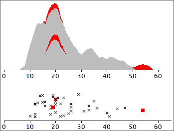
The widths of the kernels can be adjusted — if they are too narrow, the display becomes jagged, but if they are too wide, the display becomes too spread out and detail is lost.
Frequency table
A computer is normally used to draw histograms. Hand-drawn histograms are based on a frequency table that lists the histogram classes and their frequencies.
To avoid ambiguity in the histogram, the class boundaries should be chosen to ensure that no data values are on boundaries. For example,
Height of a histogram rectangle
To draw a histogram by hand with equal class widths, each class rectangle can be drawn with height equal to its class frequency. If class widths vary, we need to calculate the density for each class with the formula:
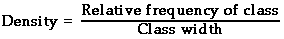
and use this for the rectangle heights.
Unhelpful detail when comparing groups
Dot plots, stem and leaf plots and histograms contain a lot of detail about the distribution of values in a data set. This level of detail is useful when examining a single data set, but when several groups of values are being compared, the detail distracts from the main differences between the groups.
For example, the jittered dot plots below do not concisely summarise the differences between the five groups.
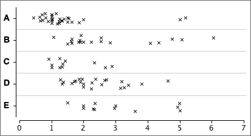
Five-number summary
Five values are enough to capture a lot of information about the distribution of values in a data set.
These values split the data set into four groups with approximately equal numbers of values.
Box plot
A box plot displays the five-number summary graphically.
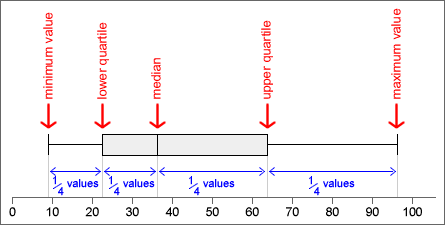
Details
The median, m, is the middle value if there is an odd number of values in the data set. If there is an even number of values, the median is the average of the middle two.
Different authors give slightly different definitions for the upper and lower quartiles. One definition of the lower quartile is the median of the lowest half of the data — i.e. of the values lower than m. (The upper quartile would then be defined as the median of the top half of the values.)
Provided you are consistent, different definitions of the quartiles should lead you to the same conclusions.
Box plots and histograms
Since the median and quartiles split the data set into quartiles, they also split a histogram of the data into four approximately equal areas.
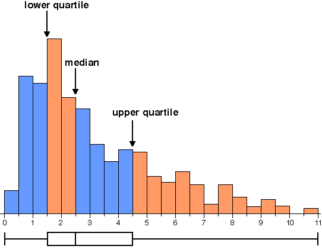
What does a box plot tell you about the distribution?
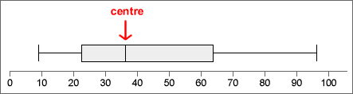
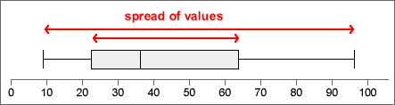
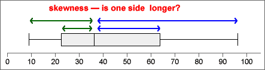
Outliers and skew distributions
Basic box plots cannot show whether the minimum and maximum in a distribution are outliers or simply the end of skew distributions.
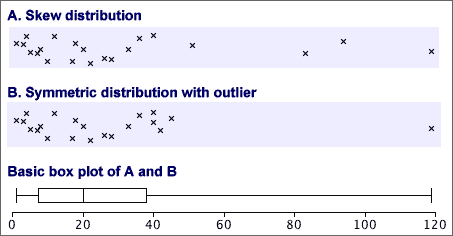
Box plots and clusters
Box plots cannot show clusters in data.
Before using a box plot, always look at the data with a dot plot or histogram to make sure that there are no clusters.
Box plots to compare groups
To display the distribution of values in a single set of data, a dot plot or histogram is more useful than a box plot. However for comparison of two or more groups of values box plots are particularly effective — they highlight differences between the centres, spreads of values and skewness of the groups.
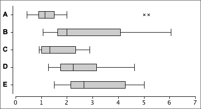
Stability of the shape of box plots
When used for small data sets, features in dot plots, stem and leaf plots and histograms are relatively unstable. Although more stable, the shapes of box plots also vary if different data are collected from the same process.
Care must be taken not to over-interpret the shape of box plots for small data sets.
As with other displays, the larger the data set, the more stable the box plots become.
Summarising centre and spread
Two important aspects of a distribution of values are particularly important.
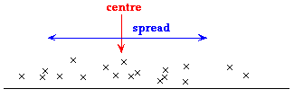
We will describe centre and spread with numerical values called summary statistics. They provide particularly concise and meaningful comparisons of different groups.
Simple summaries of centre and spread
Information from median and interquartile range
Given the median and interquartile range, it is possible to sketch a bell-shaped histogram that matches these values. Such a 'guess' is often close to the actual distribution of values.
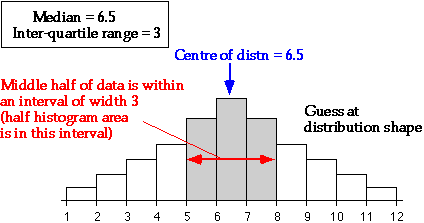
Median
Half of the data values are below the median and half are above it:
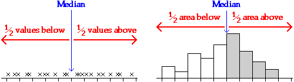
Mean
The mean is:
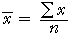
If each value in a dot plot was a solid object resting on a beam with negligible mass, the mean is the value at which the beam will balance.
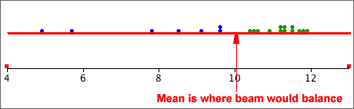
Because of the leverage exerted by points far from the centre, the mean is further into the tail of a skew distribution than you might expect.
Although both describe aspects of the 'centre' of a distribution, the median and mean are not the same and can occasionally have very different values.
Social vs economic indicator
For some data sets, the median can be considered to be a social indicator, whereas the mean can be interpreted as an economic indicator. In a company,
Outliers
An outlier has little effect on the median, but affects the mean more strongly. The median is said to be more robust.
Skew distributions
When a distribution is fairly symmetrical, the mean and median are similar, but if the distribution is skew, then the mean is usually further into the tail of the distribution than the median.
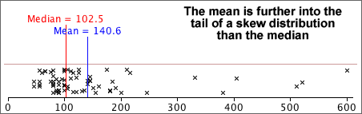
Simple measures of spread
These are (relatively) easy to understand and explain to others, but neither are commonly used.
Standard deviation
The standard deviation is a 'typical' distance of values from the sample mean.
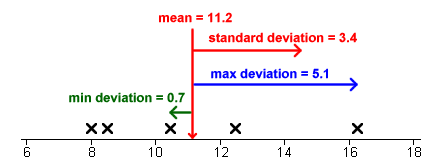
The standard deviation is denoted by the letter s and is defined by:
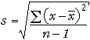
The numerator, 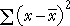, depends on the distances of the values to the mean, so it will be small if the values are all close to the mean and big if they are far from the mean.
Variance
The square of the standard deviation, s2, is called the sample variance. Variances are sometimes reported and used but standard deviations are easier to interpret since they have the same units as the original data (e.g. kilograms or dollars).
'Quarter-range' rule of thumb
For many data sets, the standard deviation is just under a quarter of the range.
| 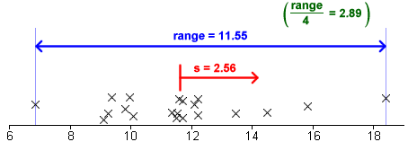 |
This is a simple rule, but is only very approximate. The standard deviation can be more than a quarter the range in distributions with short tails or much less if there are long tails or outliers.
The 70-95-100 rule of thumb
The 70-95-100 rule is more accurate. In many distributions,
The 70-95-100 rule holds approximately for most reasonably symmetric data sets, but for skew data or distributions with long tails, outliers or clusters, it is often less accurate.
Understanding the definition of the standard deviation is much less important than knowing its properties and having a feel for what its numerical value tells you about the data.
Guessing s from histogram
About 95% of the values should be within 2s of the mean, so after dropping the top 2.5% and bottom 2.5% of the values (histogram area), the remainder should span approximately 4s. Dividing this range by 4 should approximate the standard deviation.
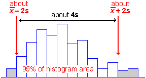
Sketching a histogram from the mean and s
Similarly, you should be able to draw a rough sketch of a symmetric histogram with any mean and standard deviation that you are given. (It would be centred on the mean and 95% of the area would be within 2s of this.)
The shape of a distribution
The mean and standard deviation hold no information about the shape of a distribution, other than its centre and spread.
Many different distributions have the same mean and standard deviation.
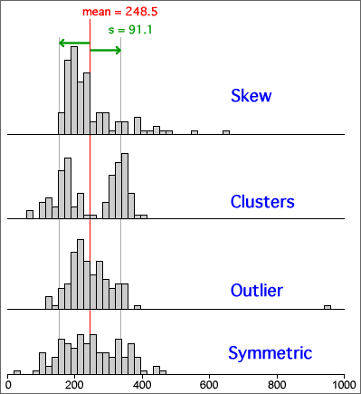
Clusters, outliers and skewness are important features of a data set and should influence the analysis that you perform and the conclusions that you reach. In particular, if you ignore outliers or clusters, you could easily reach the wrong conclusions.
It is therefore essential that you look at a graphical display of a distribution before summarising with a mean and standard deviation.
Outliers and the standard deviation
The mean and standard deviation are inadequate descriptions of distributions that have clusters, outliers or skewness.
An outlier has a strong influence on the mean of the data and an even bigger effect on the standard deviation. In the data below, one measurement was missing and coded as '999'. If this value (999) is included, the mean is a feasible value, but the standard deviation should be recognised as being unreasonable.
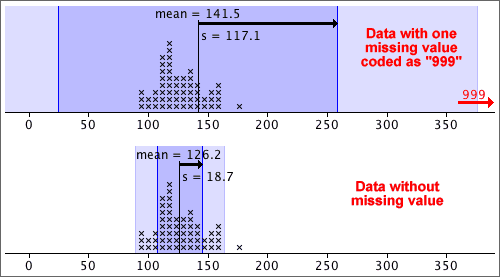
A graphical display such as a dot plot is the best way to detect an outlier and you should always look at the data before summarising with a mean and standard deviation.
An outlier should be carefully examined. Was the value incorrectly recorded? Was there something unusual about the individual from which the measurement was obtained? If we are convinced that there was something wrong about the value, it should be removed from the data set before further analysis.
Within-group and overall standard deviation
In some data sets, the 'individuals' can be split into groups.
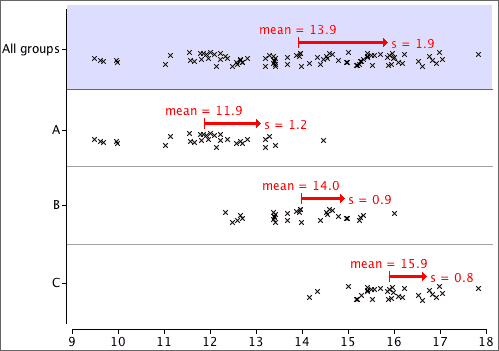
When the three groups above (A, B and C) are combined, all information about the differences between the groups is lost. The overall variability is also considerably larger than variability within the groups.
The standard deviation of the combined data set is often considerably higher than that of the separate groups.
It is therefore better to separately describe the distributions within the groups than to describe the overall distribution with a single mean and standard deviation.
Types of variation
The table below summarises monthly rainfall data in a city over several years:
| Month | Mean | Standard deviation |
|---|---|---|
| January | 32.13 | 2.11 |
| February | 31.44 | 2.17 |
| March | 31.24 | 2.08 |
| April | 30.46 | 1.73 |
| May | 28.53 | 1.69 |
| June | 26.10 | 1.37 |
| July | 26.43 | 1.32 |
| August | 30.04 | 1.28 |
| September | 33.44 | 1.24 |
| October | 34.93 | 1.01 |
| November | 34.34 | 1.49 |
| December | 32.62 | 1.75 |
| Overall | 30.99 | 3.17 |
We can distinguish between three types of variation in the rainfalls:
Variance
variance = (standard deviation)2 = 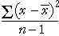
The units of the variance are the square of the units of the original values. For example, if the values are weights, the standard deviation might be 6 kg, but the variance would be 36 square kg. Since its units are easier to interpret, standard deviations are more easily understood measures of spread, but variances are important in advanced statistics. (An important collection of methods for analysing relationships between variables is called analysis of variance.)
Degrees of freedom (optional)
The divisor (n − 1) in the formula for the sample standard deviation is called its degrees of freedom. This is the number of 'independent pieces of information' that contribute to it.
Distance of values from a target, k
The distance of a single random value from a target is called its error.
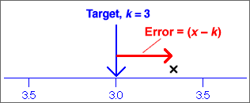
Root mean squared error
One solution to the problem of negative errors is to square them before averaging,
mean squared error = 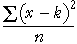
To express this in the original units of the data (instead of units such as squared kg), we can take its square root:
root mean squared error = 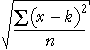
The root mean squared error is a 'typical' error.
Distances from the centre of the distribution
The population standard deviation is similar to the root mean square error but summarises the distances of the values from the centre of their distribution. It summarises the spread of values in the data.
population standard deviation = 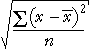
This can be illustrated graphically — the squared standard deviation is the average of the squared distances of values to their mean:
Standard deviations in reports are likely to be sample standard deviation.
Annual rainfall in Samaru, Nigeria
In most of Africa, the most important climatic variable is rainfall. Rainfall is usually highly seasonal and failure of crops is normally associated with late arrival of rain or low rainfall. A better understanding of the distribution of rainfall can affect the crops that are grown and when they are planted.
The annual rainfall (in mm) in Samaru, Northern Nigeria between 1928 and 1983 will be used as an example in this section.
Cumulative proportions
The proportion of values in the data set that are less than or equal to any value, x, is called its cumulative proportion.
For the median and quartiles, the cumulative proportions are:
| Value | Proportion below |
|---|---|
| Lower quartile | 0.25 |
| Median | 0.5 |
| Upper quartile | 0.75 |
The proportion of values greater than x is one minus its cumulative proportion,
Pr(values > x) = 1 - Pr(values <= x)
Equality
For continuous data, we do not need to distinguish between the proportion of values less than x and the proportion that are less than or equal to x. Provided the values are recorded accurately enough,
However for discrete data (counts) it is important to distinguish the terms 'less than' and 'less than or equal to'.
Cumulative distribution function
The cumulative proportion of values less than or equal to x can be found for any x. They can be shown together in a single graph of the cumulative proportion against x. This is called the cumulative distribution function of the variable.
The cumulative distribution function for a data set with n values is a step function that rises from 0.0 below the minimum x-value to 1.0 at the maximum x in the data. It increases by 1/n at each value in the data set.
Finding percentiles
Given any proportion, p, between 0 and 1, we can find a value x such that approximately this proportion, p, of values is x or lower in our data set. This is called the p'th quantile in the data set. When p is given as a percentage, the same value is called the p'th percentile.
The p'th percentile is the value x such that p percent of the data set are x or lower.
Percentiles can be read from a graph of the cumulative distribution function.
Details (optional)
It may not be possible to find a value, x, such that exactly p percent of the data are lower, expecially if the sample size is not a multiple of 100. If n = 56, the cumulative distribution function is a step function that rises by 1/56 at each data value, so it is impossible to find an x-value for which exactly say 43% of values are lower.
There is no universally accepted general definition of percentiles and different statistical programs give slightly different values. The differences are minor and should not affect your interpretation of the data.
25, 50 and 75% percentiles
The 50th percentile is the median and the 25th and 75th percentiles are the lower and upper quartiles. A box plot therefore shows these percentiles.
Displaying other percentiles
For some data sets, other percentiles are more important than the 25th and 75th ones. A similar 'box' can be used to graphically display any other percentiles. It is best to alter the way the box is drawn to avoid confusion with the standard box plot.
Joined-up quartiles
Box plots are an effective way to compare the distributions of different groups of values. When the groups are ordered, an alternative to the conventional display of the box plots is to join up the medians, quartiles and extremes of the groups in shaded bands.
Joined-up percentiles
A similar display can be used with other percentiles.
Different definitions of percentiles
It was mentioned earlier that there are several competing definitions of the upper and lower quartile. All such definitions split the data approximately into quarters but there is not a unique way to do this.
There is even less agreement about the precise definition of other percentiles, and different computer software finds them in different ways. The definitions are usually based on a smoothed version of the cumulative distribution function.
The differences between the different definitions are small if the data set is large.
If your conclusion about the data would change with a different definition of the percentiles, you are over-interpreting the data.
Linear transformations
When the values are replaced by other using an equation of the form
new value = a + b × old value
we say that there has been a linear transformation of the original values. The original and transformed data can be displayed together with dual axes.
Centre and spread
The centre and spread of the data are different, but the shape of the distribution otherwise remains unchanged. The mean and standard deviation are related:
new mean = a + b × old mean
new sd = |b| × old sd
Note that if the scale factor, b, is negative, we must change its sign since the standard deviation must always be positive.
Most other measures of centre (e.g. the median) and spread (e.g. the interquartile range) are similarly related.
Nonlinear transformations
Nonlinear transformations arise when the values are replaced by a nonlinear function of the original measurements, such as their logarithm or inverse. They have a more fundamental effect on the shape of a distribution than linear transformations.
The most commonly used nonlinear transformation is:
new value = log10 (old value)
Natural logarithms (base e) have a similar effect on the distribution of values but base-10 logarithms are easier to interpret so we use them here.
Properties of logarithms
Consider four values 1, 10, 100 and 1000. The first two values are much closer to each other than the last two values. However their logarithms are 0, 1, 2 and 3, so their logarithms are evenly spaced out.
Effect on the shape of a distribution
A logarithmic transformation selectively spreads out low values in a distribution and compresses high values. It is therefore useful before analysing skew data with a long tail towards the high values. It will spread out a dense cluster of low values and may detect clustering or outliers that would not be visible in graphical displays of the original data.
'Quantities'
Logarithmic transformation can only be used for data sets consisting of positive values — logarithms are undefined for negative or zero values. They are therefore particularly useful for quantities — i.e. amounts of something. Indeed, many researchers routinely apply logarithmic transformation to quantity data before analysis.
When are they effective?
A log transformation affects the shape of the distribution most when the ratio of the largest to the smallest value in the data is large. When this ratio is less than 10 (one order of magnitude) then the transformation has much less influence on the shape of the distribution, as in the data set below.
Power transformations
A more general family of transformations that is flexible enough to reduce or eliminate the skewness in a wide range of data sets is:

This family of power transformations includes many common ones:
Effect of power transformations
Power transformations affect the skewness of data.
If a power transformation with p > 1 is applied to data with a symmetric distribution, it will make the data skew with a long right tail. If the power transformation has p < 1, the distribution will become one with a long left tail.
In practice, power transformations are used to do the opposite. They can change many skewness distributions into fairly symmetric ones.
It is important to distinguish two types of numerical data.
Dot plots for counts
Dot plots can be used to display count data. However since discrete values are often repeated several times in a data set, the crosses need to be jittered or, preferably, stacked.
If there is a stack for each integer value, the stacked dot plot is a complete representation of the data.
Displaying moderate or large counts
For discrete data sets whose values are large counts, a histogram can be used to give a 'smooth' summary of the shape of the distribution of values.
If the counts are a bit smaller, the exact definition of the histogram classes becomes important. The class boundaries should end in '.5' to ensure that data values do not occur on the boundary of two classes.
Displaying small counts
When the range of values in a discrete data set is small, a histogram can be drawn with class width 1 (and with class boundaries ending in '.5'). These classes are centred on 1, 2, 3, etc.
This can be improved by narrowing the histogram rectangles into bars to emphasise the discrete nature of the data. This is called a bar chart.
Calculating the mean from a frequency table
| x | ƒx | ||
|
|
||
| total | 600 |
|---|
The mean can be easily calculated from this table:
More generally,
where the summation is over the distinct values in the data set, rather than all individuals.
Calculating the standard deviation
A similar formula holds for the standard deviation, using the formula